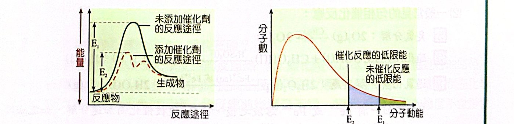
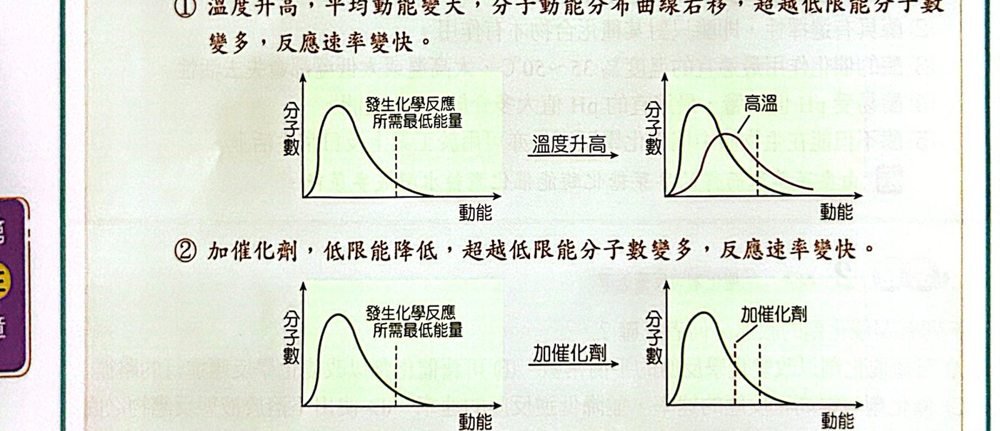
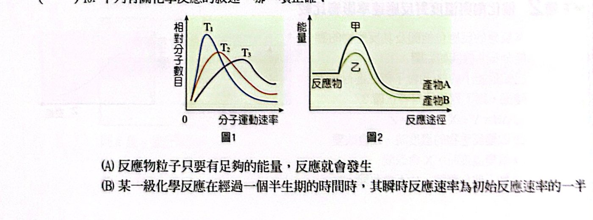
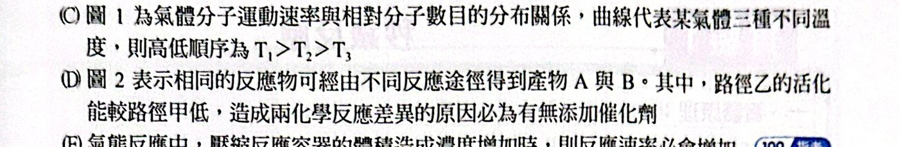

重點整理
一、催化劑
1. 定義
能增快反應速率，而本身在反應最後化學性質與質量都不改變的物質，稱為催化劑（觸媒）。
2. 性質
催化劑會參與反應，改變反應機構（途徑），但反應後又被釋放回來，所以不出現在全反應式中。
例：氟氯碳化物經陽光照射產生 Cl 原子，Cl 是破壞臭氧的催化劑：
- O3 → O2 ＋ O
- Cl ＋ O3 → ClO ＋ O2
- ClO ＋ O → Cl ＋ O2
- 總反應：2O3 → 3O2
3. 催化原理
加入催化劑能降低活化能，走另一條需要能量較低的途徑 → 超過低限能的分子數增加 → 有效碰撞增加 → 速率加快。

催化劑降低活化能，使超過低限能的分子變多
4. 催化劑能改變 / 不能改變的
| 可改變 |
不可改變 |
| 反應途徑、活化複合體、反應級數 |
反應熱 |
| 活化能（等量降低正、逆反應活化能） |
分子動能分布曲線 |
| 反應速率（正、逆反應等倍率增加） |
平衡狀態、生成物的產率 |
| 速率常數（正、逆等倍率增加） |
平衡常數 |
| 達平衡所需時間 |
不能使不自發的反應變成自發 |
- 催化劑有選擇性：一種催化劑只能催化某些反應。
- 反應物相同、催化劑不同，可能得到不同產物：
- CO ＋ 3H2 →(Ni，100 ℃，1 atm) CH4 ＋ H2O
- CO ＋ 2H2 →(ZnO·Cr2O3，350 ℃，200 atm) CH3OH
二、催化反應
1. 勻相催化反應
催化劑和反應物互溶成同一個相。催化劑濃度愈高，速率愈快。
- 臭氧分解：2O3(g) →(Cl(g)) 3O2(g)
- 酯化：CH3COOH(l) ＋ CH3OH(l) →(H2SO4(l)) CH3COOCH3 ＋ H2O
- 過氧化氫分解：2H2O2(aq) →(Fe2＋(aq) 或 Fe3＋(aq)) 2H2O ＋ O2（雙氧水滴在流血傷口冒大量氣泡）
2. 非勻相催化反應
催化劑和反應物不互溶，反應在相的界面進行。
- 速率與催化劑表面積成正比，所以催化劑常做成粉末或海綿狀。
- 汽車觸媒轉化器：用過渡金屬氧化物及貴金屬（Pt）把 CO、未燃燒的烴氧化成 CO2、H2O，把氮氧化物還原成 N2；塗在高表面積的陶瓷蜂巢基材上。
- 哈柏法：N2 ＋ 3H2 →(鐵粉) 2NH3
- 2KClO3(s) →(MnO2(s)) 2KCl ＋ 3O2
- 2H2O2(aq) →(MnO2(s)) 2H2O ＋ O2
三、酶催化反應
- 生物體內的催化劑稱為酶（酵素），如唾液澱粉酶、胃蛋白酶。
- 特性：
- 大部分由蛋白質巨大分子組成
- 具選擇性，只對某種化合物有作用
- 最適溫度約 35～50 ℃，太高或太低都會失去活性
- 易受 pH 影響，最適 pH 大多介於 5～8
- 也用於工業與日常生活（麥芽糖化酶把澱粉水解成麥芽糖）

溫度升高與加催化劑對動能分布的影響
例題與類題
看答案與詳解收起
答催化劑：Cu2＋；中間產物：Cu＋、CuSO4＋；生成物：I2、SO42−
解三式相加：
- 2Cu2＋ ＋ 2I− → 2Cu＋ ＋ I2
- Cu＋ ＋ S2O82− → CuSO4＋ ＋ SO42−
- Cu＋ ＋ CuSO4＋ → 2Cu2＋ ＋ SO42−
淨反應：S2O82− ＋ 2I− → I2 ＋ 2SO42−
- Cu2＋：一開始被消耗、最後又生成 → 催化劑
- Cu＋、CuSO4＋：先生成後消耗 → 中間產物
- I2、SO42−：生成物
看答案與詳解收起
答(B)
解
- (A) ✗ 催化劑不改變平衡常數
- (B) ○
- (C) ✗ 正、逆反應速率同時提高
- (D) ✗ 非勻相催化，速率與催化劑表面積成正比
看答案與詳解收起
答(B)(C)
解
- (A) ✗ 不改變反應熱
- (B) ○ (C) ○
- (D) ✗ 催化劑會參與反應，只是最後又生成回來
- (E) ✗ 勻相催化劑濃度愈高，速率愈快
看答案與詳解收起
答(C)
解
- (A) 觸媒轉化器：固體催化劑、氣體反應物 → 非勻相
- (B) 哈柏法用鐵粉 → 非勻相
- (C) 血液中的催化物質與 H2O2 都在水溶液中 → 勻相 ✓
- (D) 鎳粉 → 非勻相
看答案與詳解收起
答(A)(B)(D)
解
- (A) ○ T 的曲線較扁、往右移 ⇒ T ＞ 30 ℃
- (B) ○ 同溫度、同一反應，丙的 E 較低 ⇒ 加了催化劑
- (C) ✗ 活化能較大（乙）的反應受溫度影響較大
- (D) ○ 溫度不改變活化能 E
- (E) ✗ E 不隨溫度改變
看答案與詳解收起
答(C)(E)
解
- (A) ✗ E 愈向右（活化能愈大），速率愈慢
- (B) ✗ 升溫不改變 E（是曲線移動）
- (C) ○
- (D) ✗ (E) ○ 催化劑降低活化能，E 左移
看答案與詳解收起
答(A)(B)(C)(D)
解
- (A) ○ 甲→丙：碰撞頻率不變、有效分率加倍 ⇒ 催化劑
- (B) ○ 甲→乙：碰撞頻率加倍、有效分率不變 ⇒ 增加濃度（縮小體積）
- (C) ○ 甲→丁：碰撞頻率與有效分率都增加 ⇒ 升溫
- (D) ○ 催化劑不改變產率
- (E) ✗ 乙與丙速率相同（都是 6.4×10−7）
單元練習
看答案與詳解收起
答(C)
解
- H3O＋：步驟 1 消耗、步驟 3 生成 → 催化劑
- Br−：步驟 2 消耗、步驟 3 生成 → 催化劑 ✓
- HOOH2＋、HOBr：先生成後消耗 → 中間產物
- H2O、O2：生成物
（總反應 2H2O2 → 2H2O ＋ O2）
看答案與詳解收起
答(C)
解
- (A) ✗ 催化劑不改變產率
- (B) ✗ 酵素溫度太高會失去活性
- (C) ○
- (D) ✗ 酵素受 pH 影響
看答案與詳解收起
答(D)(E)
解
- (A) ✗ 不改變產率
- (B) ✗ 不改變分子動能分布
- (C) ✗ 正、逆反應同時加快
- (D) ○ (E) ○ 催化劑有選擇性，不同催化劑可得不同產物
看答案與詳解收起
答(A)(D)(E)
解乙途徑：Mn2＋ 先消耗後生成 → 催化劑；Mn3＋、Mn4＋ 為中間產物。
- (A) ○ 甲較慢 ⇒ 活化能較高
- (B) ✗ 催化劑是 Mn2＋
- (C) ✗ 催化劑不改變產量
- (D) ○ 反應熱相同
- (E) ○ 同溫下動能分布相同
看答案與詳解收起
答(A)
解MnO2 是催化劑，只改變速率：H2O2 的量相同 ⇒ O2 仍為 50 mL，放出的熱相同 ⇒ 升溫仍為 5.0 ℃。
看答案與詳解收起
答(C)
解k 的單位 M·s−1 ⇒ 零級，濃度對時間是直線（實線）。
虛線是指數遞減（一級反應的形狀），反應級數改變 ⇒ 反應途徑改變 ⇒ 只有加入催化劑能做到。
升溫、增加濃度、縮小體積都不會改變級數。
看答案與詳解收起
答(B)
解觸媒轉化器：固態催化劑與氣態廢氣 → 非勻相。
(A) 酵素與澱粉在水溶液中；(C) 濃硫酸與液態反應物互溶；(D) Cl 與 O3 都是氣體 → 都是勻相。
看答案與詳解收起
答(A)(C)(E)
解催化劑與反應物同相：
- (A) Fe2＋(aq) 與 H2O2(aq) ✓
- (B) MnO2(s) 與 KClO3(s)：不同固體 ✗
- (C) NO(g) 與 SO2、O2(g) ✓
- (D) Fe(s) 與氣體 ✗
- (E) H2SO4(l) 與液態反應物 ✓
看答案與詳解收起
答(C)(E)
解固體表面催化：
- (C) H2O2 在固體 MnO2 表面分解 ✓
- (E) 觸媒轉化器（固體 Pt 等）✓
其餘沒有固體催化劑。
看答案與詳解收起
答(B)(C)(E)
解三式相加（式(3) 與 (1)(2) 對應消去）：總反應 H2O → H2 ＋ ½O2
- (A) ✗ H2SO4 在式(2) 生成、式(3) 消耗 → 中間產物
- (B) ○ 水的分解是吸熱反應
- (C) ○ 用廢熱推動吸熱反應，熱能轉成化學能
- (D) ✗ I2 是中間產物，但 O2 是生成物
- (E) ○ HI、SO2 都是先消耗、後又生成回來 → 在這個循環中扮演催化劑的角色
看答案與詳解收起
答(B)
解X 為正反應活化能、Y 為逆反應活化能、Z 為低限能。
- (A) ✗ ΔH ＝ X − Y
- (B) ○ 活化能數值 ＝ 低限能
- (C) ✗ 濃度不改變低限能
- (D) ✗ 溫度不改變活化能
- (E) ✗ 催化劑會降低 Y
看答案與詳解收起
答(C)(E)
解正確的對照：
| | 活化能 | 反應熱 | 動能分布曲線 | 總碰撞頻率 | 超越低限能粒子數 |
|---|---|---|---|---|---|
| 溫度上升 | × | ○ | ○ | ○ | ○ |
| 催化劑 | ○ | × | × | × | ○ |
表中只有 (C)、(E) 兩欄完全正確。
看答案與詳解收起
答(E)
解
- (A) ✗ 升溫會使 k 變大
- (B) ✗ 都不改變反應熱
- (C) ✗ 正、逆反應都加快
- (D) ✗ 不改變產率
- (E) ○ 固體催化劑容易與反應物、產物分離
看答案與詳解收起
答(B)(D)
解N2O 分解：Ea ＝ 60，ΔH ＝ −19.0（生成熱的相反）
N2O 生成（逆反應）活化能 ＝ 60 − (−19) ＝ 79 kcal/mol
- (C) ✗ 升溫分解速率增加
- (D) ○ 升溫 k 變大
- (E) ✗ 催化劑使分解與生成速率都加快
看答案與詳解收起
答(B)(E)
解
- (A) ✗ 正反應活化能 134 kJ
- (B) ○ 134 ＋ 234 ＝ 368 kJ
- (C) ✗ 逆反應可以發生，只是很慢
- (D) ✗ 升溫不改變位能圖
- (E) ○


看答案與詳解收起
答(B)
解
- (A) ✗ 還需要碰撞位向正確
- (B) ○ 一級反應 r ＝ k[A]，濃度減半速率減半
- (C) ✗ 溫度愈高曲線愈扁、峰值愈右 ⇒ T3 ＞ T2 ＞ T1
- (D) ✗ 甲、乙產物不同，是不同的反應途徑，不一定是有無催化劑
- (E) ✗ 零級反應速率與濃度無關
看答案與詳解收起
答(1) ①③ (2) ④⑤⑥ (3) ⑧⑨
解
- 壓縮體積：濃度增加 → 碰撞頻率 ↑、有效碰撞頻率 ↑、有效分率不變
- 加催化劑：碰撞頻率不變、有效分率 ↑、有效碰撞頻率 ↑
- 升溫：三者都 ↑
看答案與詳解收起
答(A)(B)(D)
解
- Cl：步驟一消耗、步驟二生成 → 催化劑
- ClO：先生成後消耗 → 中間產物
- O2：生成物
- 速率定律 r ＝ k[O3][Cl] 與步驟一相符 → 步驟一為速率決定步驟